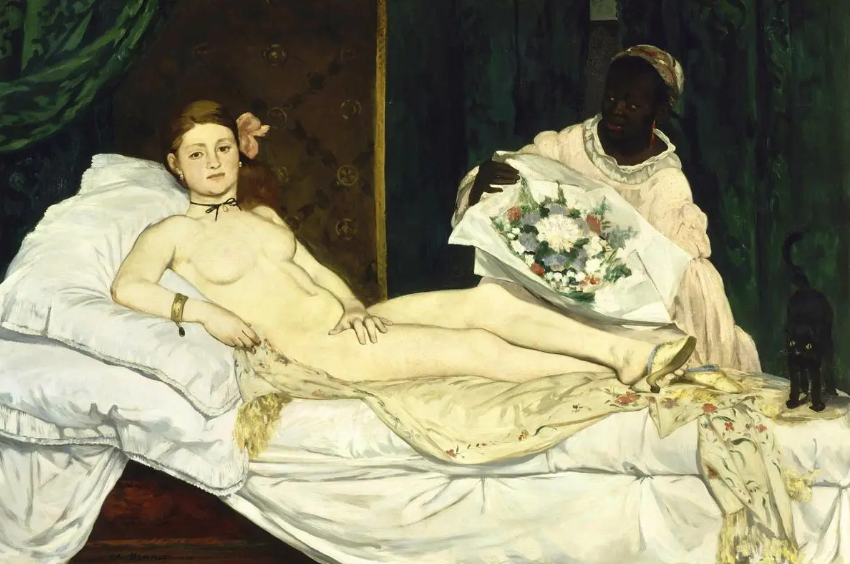

S — Substitute · Olympia (Manet)

Titian shows a goddess of love in a rich Venetian bedroom — ideal beauty, mythic story. Manet keeps the reclining nude on a bed, but substitutes the goddess with a real Paris sex worker who looks straight at the viewer.
Why it works: The substitution moves the topic from myth to modern life. The viewer is no longer “safe” in a story about gods; the painting asks questions about society and the gaze.